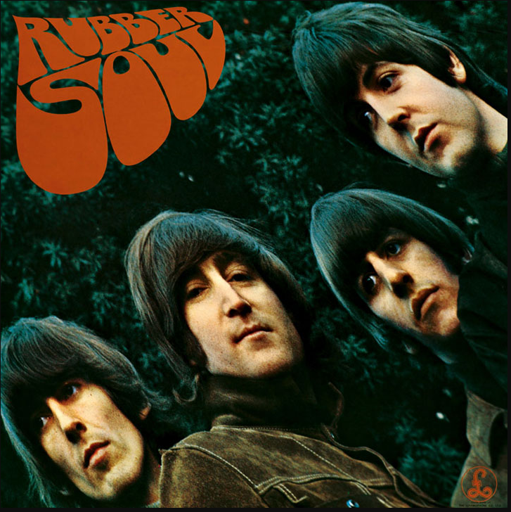

Rubber Soul (1965)
Fue descrito como un logro artístico importante de la banda, teniendo un amplio éxito comercial y de crítica
- «Drive My Car»
- «Norwegian Wood (This Bird Has Flown)»
- «You Won't See Me»
- «Nowhere Man»
- «Think for Yourself»
- «The Word»
- «Michelle»
- «What Goes On»
- «Girl»
- «I'm Looking Through You»
- «In My Life»
- «Wait»
- «If I Needed Someone»
- «Run for Your Life»